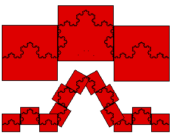

| Instead of approximating the Koch cuve with line segments or
triangles, we could cover it with squares |
|  |
| Certainly, smaller squares will pick up more detail of the Koch
curve, and will give a better approximation of the curve. Suppose we
need |
| N(r) squares of side length r |
| to cover the curve. Then |
| N(r)⋅r approximates the length of the curve, and |
| N(r)⋅r2 approximates the area of the curve. |
|
| For several examples, we shall find the pattern of how N(r) changes with r.
This will tell us something about the complexity of the shape. |